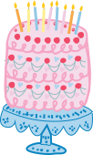

Hjælp jeg har fødselsdag!
♡
Tryk her hvis du har brug for hjælp til at skulle holde en fødselsdag, du får idéer til hurtige løsninger, pynt, kage og en nødplan.
Åh nej – en fødselsdag er opstået, og du er måske slet ikke klar! Mangler du gave, idéer eller en plan? Bare rolig. Her på siden får du akut hjælp til alt fra panik-planlægning til sidste-øjebliks løsninger, så du kan redde situationen og stadig få en fantastisk fødselsdag.
Tryk her hvis du har brug for hjælp til at skulle holde en fødselsdag, du får idéer til hurtige løsninger, pynt, kage og en nødplan.
Tryk her hvis du har brug for hjælp til at skulle holde en fødselsdag, du får en enkel guide til at planlægge dagen fra start til slut.
En historisk beslutning er blevet truffet tidligere i dag, da fødselaren officielt har erklæret sin fødselsdag som national fridag.
En historisk beslutning er blevet truffet tidligere i dag, da fødselaren officielt har erklæret sin fødselsdag som national fridag – i hvert fald for sig selv. Alle daglige pligter, lektier og ansvar er midlertidigt sat på pause, mens fokus i stedet rettes mod fejring, snacks og maksimal afslapning. Eksperter vurderer, at dagen vil inkludere en kritisk mængde sukker, grin og muligvis en lur midt på dagen. Venner og familie har allerede meldt sig klar til at støtte op om beslutningen.
Tryk her hvis du har brug for hjælp til at skulle holde en fødselsdag eller mangler sjove idéer til stemning og pynt.
En fødselsdagsfest har taget en uventet drejning, efter en diskokugle pludselig blev aktiveret midt i stuen. Ifølge øjenvidner blev rummet øjeblikkeligt forvandlet til et dansegulv, hvor lysglimt fløj i alle retninger, og gæster spontant begyndte at danse. Situationen eskalerede hurtigt, da flere deltagere rapporterede om “uimodståelig trang til at groove”, mens musikken blev skruet op til festligt niveau. Eksperter vurderer, at diskokuglens effekt kan vare hele aftenen – og muligvis føre til rekordhøj stemning. Arrangøren har endnu ikke forsøgt at slukke kuglen, da den nu anses som festens vigtigste element.
Tryk her hvis du har brug for hjælp til at skulle holde en fødselsdag eller hurtigt finde en løsning på kageproblemer.

Der er opstået kaotiske tilstande i København, efter at en fødselsdagsfest angiveligt er ved at løbe tør for kage langt tidligere end forventet. Øjenvidner fortæller, at situationen eskalerede hurtigt, da gæsterne begyndte at tage ekstra store stykker “for en sikkerheds skyld”. Arrangøren arbejder nu på en akut løsning, hvor alternative desserter – herunder is og chokolade – er blevet bragt i spil. Myndighederne opfordrer til ro og fair fordeling af de sidste kagerester.